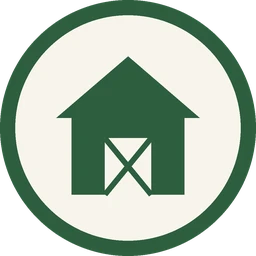

Fijn dat je er bent
Wêr hast
sin oan?
Kies iets lekkers. Wij zorgen voor de rest.

BoerderijrecreatieBestellen op het erfProefversie · het aanbod is echt, betalen is nog een test (er gaat geen echt geld om)
Fijn dat je er bent
Kies iets lekkers. Wij zorgen voor de rest.